Objectives
In this Exercise you will learn how to subscribe to Juniper Mist Floors, Buildings, and Sites to enable real-time data collection.
Before you begin:
This Exercise requires that you have:
- Completed the pre-requisites required for all labs
- Completed the previous exercises
- Assigned Maximo Manage Locations to the target Juniper Mist Site, Building, and Floor
Subscribe Juniper Mist Floor
To subscribe to a Juniper Mist Floor from the Floor Details page:
- The Subscribe action is available only after a Maximo Manage Location has been assigned to the Mist Floor.
-
From the Action menu (⋮) for the required Mist Floor, select Subscribe.
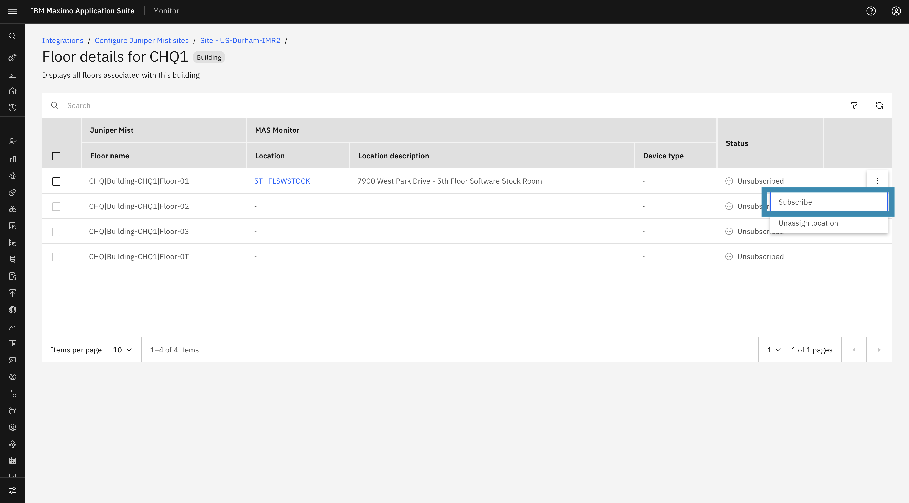
-
A confirmation dialog will appear to confirm the subscription.
-
Click Subscribe to proceed.
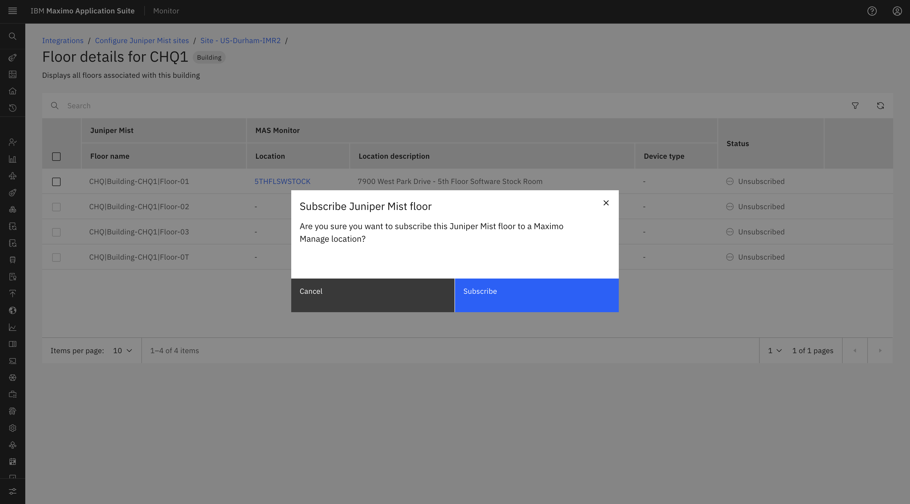
-
Once the subscription is successful, the selected Mist Floor status will be updated to Subscribed.
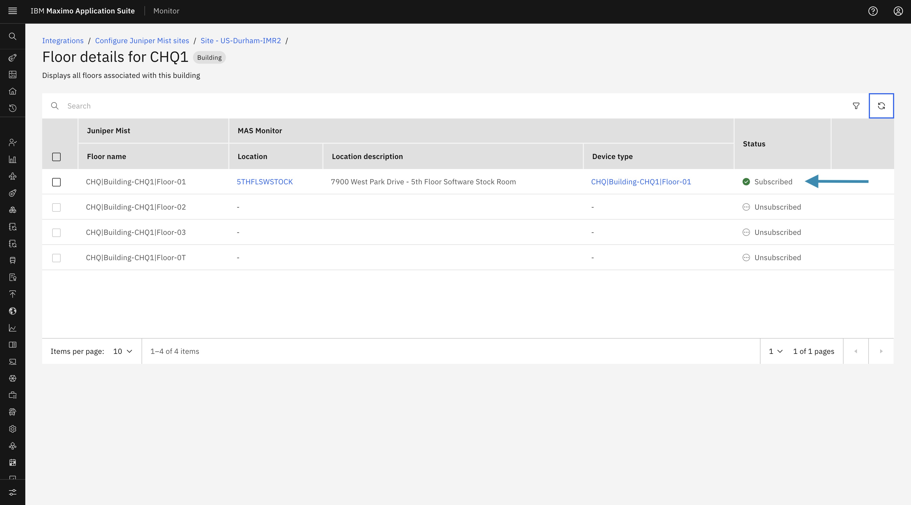
Subscribe Juniper Mist Building
To subscribe to a Juniper Mist Building from the Building Details page:
- The Subscribe action is available only after a Maximo Manage Location has been assigned to the Mist Building.
-
From the Action menu (⋮) for the required Mist Building, select Subscribe.
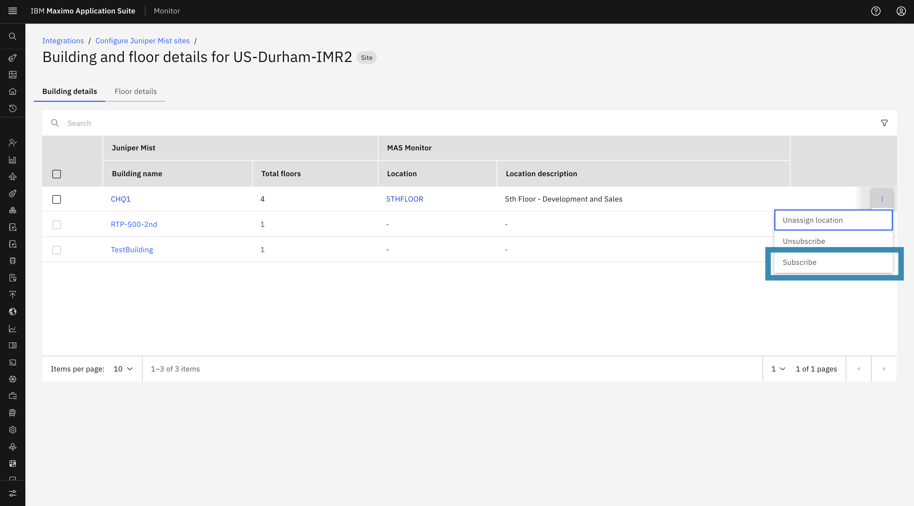
-
A confirmation dialog will appear. Click Subscribe to proceed.
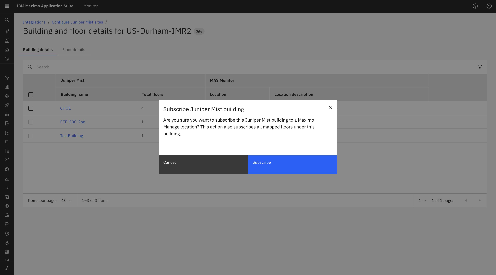
-
Subscribing to a Mist Building initiates the subscription process for all floors associated with that building.
- During the subscription process, the system validates whether each floor has a Maximo Manage Location assigned:
- Floors with an assigned location will be subscribed successfully.
- Floors without an assigned location will not be subscribed and will generate an error.
- If only some floors are successfully subscribed, the building will be marked as Partially Subscribed.
-
In case of an error or partial subscription, the confirmation modal provides an option to download the error file for further review.
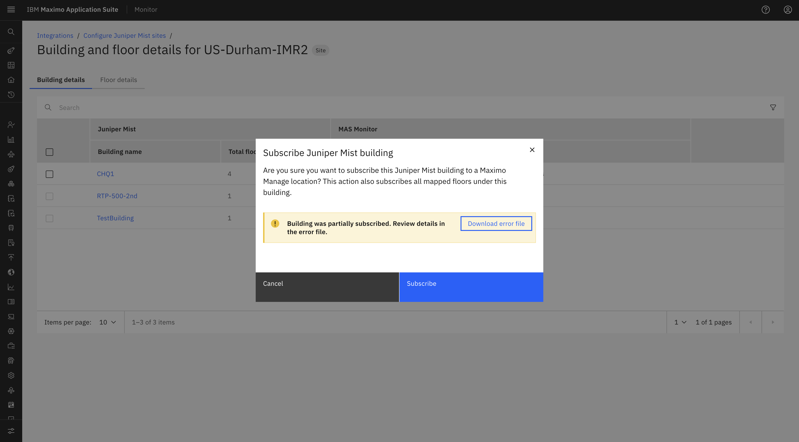
-
Once the subscription is completed, the subscription status of the applicable Mist Building floors will be updated to Subscribed.
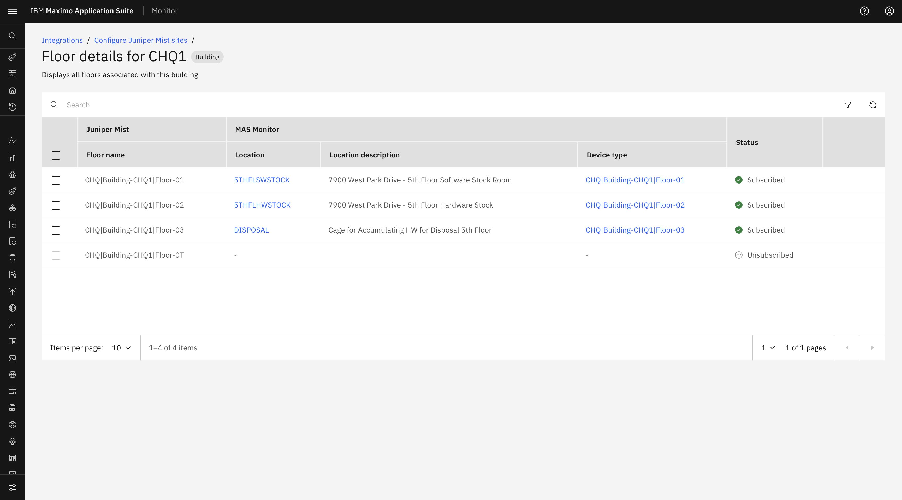
Subscribe Juniper Mist Site
To subscribe to a Juniper Mist Site from the Site List page:
- The Subscribe action is available only after a Maximo Manage Location has been assigned to the Mist Site.
-
From the Action menu (⋮) for the required Mist Site, select Subscribe.
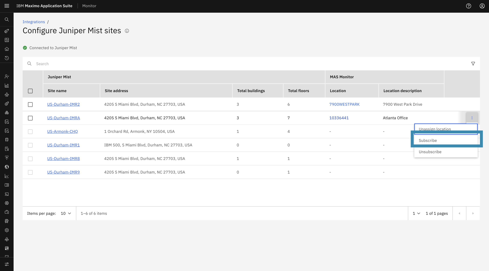
-
A confirmation dialog will appear. Click Subscribe to proceed.
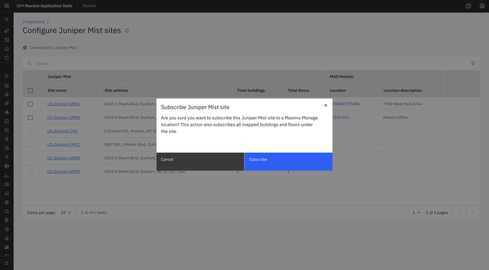
-
Subscribing to a Mist Site initiates the subscription process for all Buildings and associated Floors within that Site.
- During the subscription process, the system validates whether a Maximo Manage Location is assigned to each Building and Floor:
- Floors with an assigned location will be subscribed successfully.
- Floors without an assigned location will not be subscribed and will generate an error.
- If only some Floors are successfully subscribed, the Site will be marked as Partially Subscribed.
-
In case of an error or partial subscription, the confirmation modal provides an option to download the error file for further review.
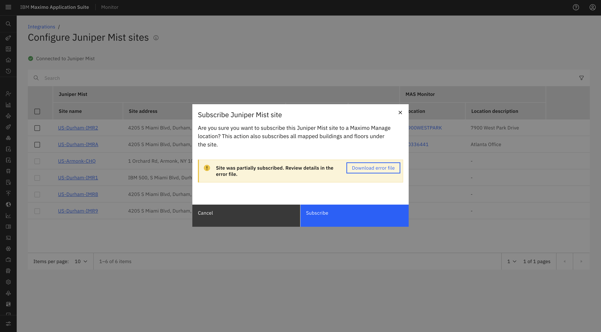
-
Once the subscription is completed successfully, the applicable Mist Site associated floors subscription statuses will be updated to Subscribed.
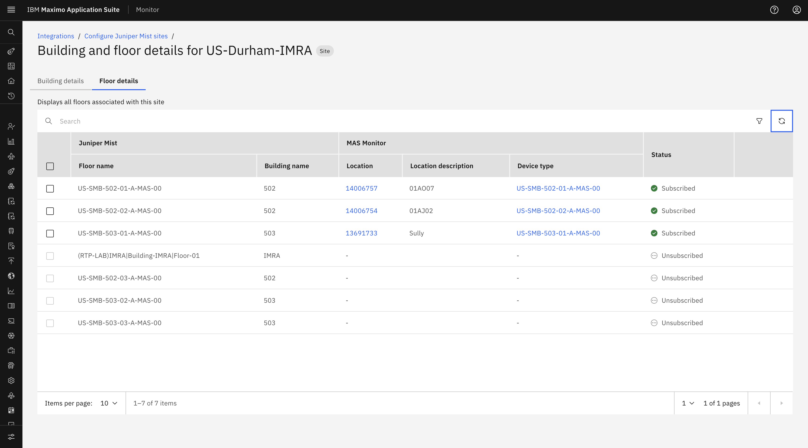